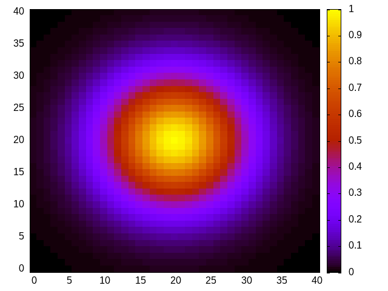

New things to learn
GnuPlotScript() constructor
By default GnuPlotScript opens a pipe and allows plots to be immediately rendered in a gnuplot window.
If you do not want to render plot, use
gp = GnuPlotScript(direct_plot=false)CAVEAT: if direct_plot=false you will have to run the gnuplot script afterward to generate the exported figure files.
Note: you can work with several scripts in the same time:
gp_1 = GnuPlotScript()
gp_2 = GnuPlotScript()
free_form(gp_1,"plot sin(x)")
free_form(gp_2,"plot cos(x)")The free_form() function
This is the most important function and it simply forwards a string to gnuplot.
You have direct access to all gnuplot functionalities and there is very little work for me to do that! :)
Please note one difference. Contrary to gnuplot you can use replot even for the first plot. The advantage is that you can chain plots without worrying about the first plot. To erase old plots and start a new one you can still use plot, as usual.
Example:
gp = GnuPlotScript()
free_form(gp,"replot sin(x) t 'first plot'")
free_form(gp,"replot sin(2*x) t 'second plot'")
free_form(gp,"plot cos(x) t 'new plot'")Data embedding
Before use, data (vector or matrix) need to be registered:
id_1 = register_data(gp,my_vector)
id_2 = register_data(gp,my_matrix)You will get an identifier id. This identifier can be then used in plot functions. By example:
using GnuPlotScripting
X = -2:0.1:2
Y = -2:0.1:2
M = [exp(-x_i*x_i-y_j*y_j) for x_i=X, y_j=Y]
gp = GnuPlotScript()
id = register_data(gp, M)
free_form(gp,"set autoscale fix")
free_form(gp,"plot '$id' matrix using 1:2:3 with image")
Note: hopefully, data is saved only once, even if reused several times.
Exporting figures
You can export figures as follows:
export_png(gp, "my_fig.png")The figures are directly exported if gp was initialized with direct_plot=true (which is the default option). If not you will have to save and run the gnuplot script afterward.
Currently supported formats are:
I will add more in the future... eps or pdf first I guess.
Saving gnuplot scripts
At any time you can export the gnuplot script as follows:
write_script("script.gp",gp)Running gnuplot scripts
To “replay” the saved script, simply launch gnuplot from a shell terminal:
gnuplot script.gp To prevent gnuplot from closing immediately after the script is ended, you can add a final - to the gnuplot command.
gnuplot script.gp -Note: you can also do that from Julia
run(Cmd(["gnuplot","script.gp"]))